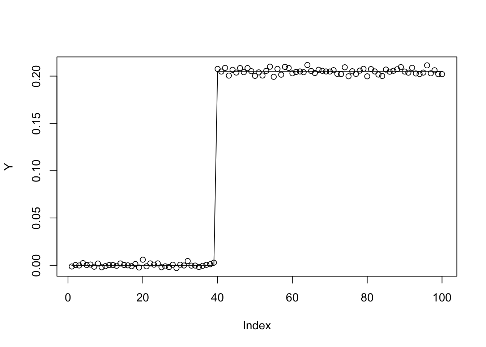
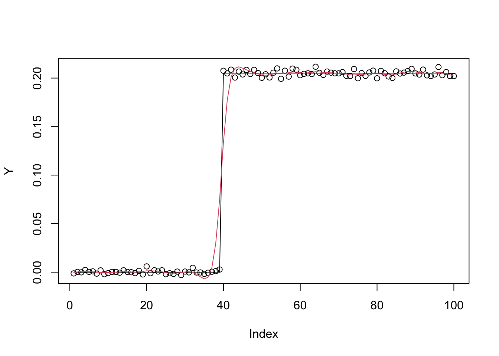
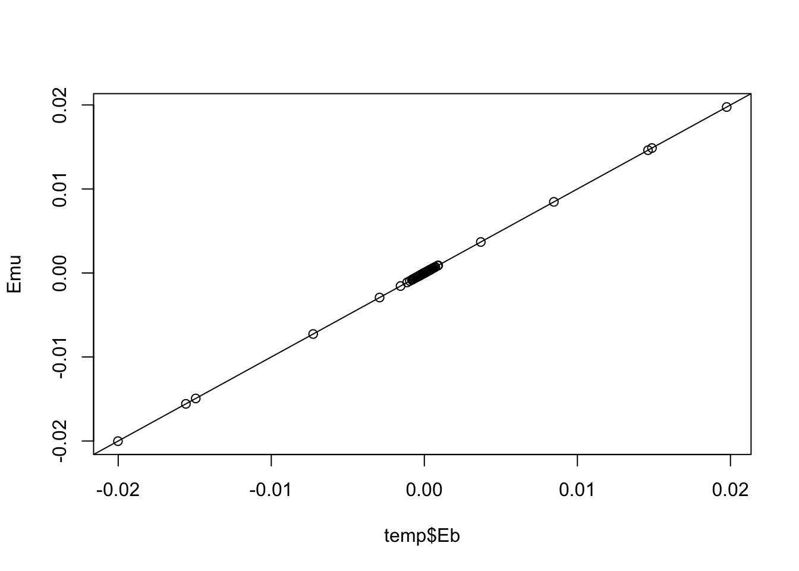
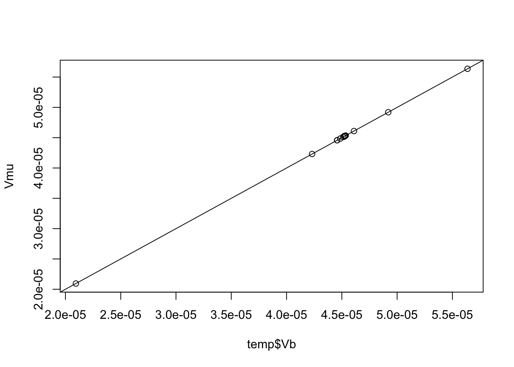
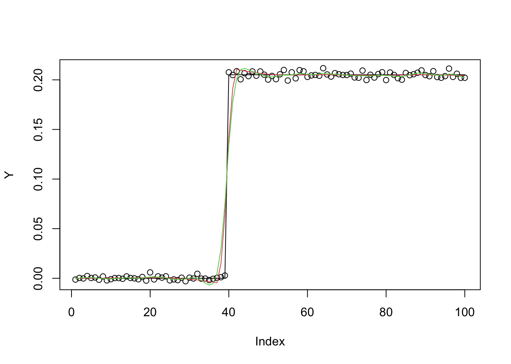

Last updated: 2023-10-13
Checks: 7 0
Knit directory: misc/analysis/
This reproducible R Markdown analysis was created with workflowr (version 1.7.0). The Checks tab describes the reproducibility checks that were applied when the results were created. The Past versions tab lists the development history.
Great! Since the R Markdown file has been committed to the Git repository, you know the exact version of the code that produced these results.
Great job! The global environment was empty. Objects defined in the global environment can affect the analysis in your R Markdown file in unknown ways. For reproduciblity it’s best to always run the code in an empty environment.
The command set.seed(1) was run prior to running the
code in the R Markdown file. Setting a seed ensures that any results
that rely on randomness, e.g. subsampling or permutations, are
reproducible.
Great job! Recording the operating system, R version, and package versions is critical for reproducibility.
Nice! There were no cached chunks for this analysis, so you can be confident that you successfully produced the results during this run.
Great job! Using relative paths to the files within your workflowr project makes it easier to run your code on other machines.
Great! You are using Git for version control. Tracking code development and connecting the code version to the results is critical for reproducibility.
The results in this page were generated with repository version 08156f9. See the Past versions tab to see a history of the changes made to the R Markdown and HTML files.
Note that you need to be careful to ensure that all relevant files for
the analysis have been committed to Git prior to generating the results
(you can use wflow_publish or
wflow_git_commit). workflowr only checks the R Markdown
file, but you know if there are other scripts or data files that it
depends on. Below is the status of the Git repository when the results
were generated:
Ignored files:
Ignored: .DS_Store
Ignored: .Rhistory
Ignored: .Rproj.user/
Ignored: analysis/.RData
Ignored: analysis/.Rhistory
Ignored: analysis/ALStruct_cache/
Ignored: data/.Rhistory
Ignored: data/methylation-data-for-matthew.rds
Ignored: data/pbmc/
Untracked files:
Untracked: .dropbox
Untracked: Icon
Untracked: analysis/GHstan.Rmd
Untracked: analysis/GTEX-cogaps.Rmd
Untracked: analysis/PACS.Rmd
Untracked: analysis/Rplot.png
Untracked: analysis/SPCAvRP.rmd
Untracked: analysis/admm_02.Rmd
Untracked: analysis/admm_03.Rmd
Untracked: analysis/cholesky.Rmd
Untracked: analysis/compare-transformed-models.Rmd
Untracked: analysis/cormotif.Rmd
Untracked: analysis/cp_ash.Rmd
Untracked: analysis/eQTL.perm.rand.pdf
Untracked: analysis/eb_prepilot.Rmd
Untracked: analysis/eb_var.Rmd
Untracked: analysis/ebpmf1.Rmd
Untracked: analysis/ebspca_sims.Rmd
Untracked: analysis/fa_check_identify.Rmd
Untracked: analysis/fa_iterative.Rmd
Untracked: analysis/flash_test_tree.Rmd
Untracked: analysis/flash_tree.Rmd
Untracked: analysis/ieQTL.perm.rand.pdf
Untracked: analysis/lasso_em_03.Rmd
Untracked: analysis/m6amash.Rmd
Untracked: analysis/mash_bhat_z.Rmd
Untracked: analysis/mash_ieqtl_permutations.Rmd
Untracked: analysis/methylation_example.Rmd
Untracked: analysis/mixsqp.Rmd
Untracked: analysis/mr.ash_lasso_init.Rmd
Untracked: analysis/mr.mash.test.Rmd
Untracked: analysis/mr_ash_modular.Rmd
Untracked: analysis/mr_ash_parameterization.Rmd
Untracked: analysis/mr_ash_ridge.Rmd
Untracked: analysis/mv_gaussian_message_passing.Rmd
Untracked: analysis/nejm.Rmd
Untracked: analysis/nmf_bg.Rmd
Untracked: analysis/normal_conditional_on_r2.Rmd
Untracked: analysis/normalize.Rmd
Untracked: analysis/pbmc.Rmd
Untracked: analysis/pca_binary_weighted.Rmd
Untracked: analysis/pca_l1.Rmd
Untracked: analysis/poisson_shrink.Rmd
Untracked: analysis/poisson_transform.Rmd
Untracked: analysis/pseudodata.Rmd
Untracked: analysis/qrnotes.txt
Untracked: analysis/ridge_iterative_02.Rmd
Untracked: analysis/ridge_iterative_splitting.Rmd
Untracked: analysis/samps/
Untracked: analysis/sc_bimodal.Rmd
Untracked: analysis/shrinkage_comparisons_changepoints.Rmd
Untracked: analysis/susie_en.Rmd
Untracked: analysis/susie_z_investigate.Rmd
Untracked: analysis/svd-timing.Rmd
Untracked: analysis/temp.RDS
Untracked: analysis/temp.Rmd
Untracked: analysis/test-figure/
Untracked: analysis/test.Rmd
Untracked: analysis/test.Rpres
Untracked: analysis/test.md
Untracked: analysis/test_qr.R
Untracked: analysis/test_sparse.Rmd
Untracked: analysis/tree_dist_top_eigenvector.Rmd
Untracked: analysis/z.txt
Untracked: code/multivariate_testfuncs.R
Untracked: code/rqb.hacked.R
Untracked: data/4matthew/
Untracked: data/4matthew2/
Untracked: data/E-MTAB-2805.processed.1/
Untracked: data/ENSG00000156738.Sim_Y2.RDS
Untracked: data/GDS5363_full.soft.gz
Untracked: data/GSE41265_allGenesTPM.txt
Untracked: data/Muscle_Skeletal.ACTN3.pm1Mb.RDS
Untracked: data/Thyroid.FMO2.pm1Mb.RDS
Untracked: data/bmass.HaemgenRBC2016.MAF01.Vs2.MergedDataSources.200kRanSubset.ChrBPMAFMarkerZScores.vs1.txt.gz
Untracked: data/bmass.HaemgenRBC2016.Vs2.NewSNPs.ZScores.hclust.vs1.txt
Untracked: data/bmass.HaemgenRBC2016.Vs2.PreviousSNPs.ZScores.hclust.vs1.txt
Untracked: data/eb_prepilot/
Untracked: data/finemap_data/fmo2.sim/b.txt
Untracked: data/finemap_data/fmo2.sim/dap_out.txt
Untracked: data/finemap_data/fmo2.sim/dap_out2.txt
Untracked: data/finemap_data/fmo2.sim/dap_out2_snp.txt
Untracked: data/finemap_data/fmo2.sim/dap_out_snp.txt
Untracked: data/finemap_data/fmo2.sim/data
Untracked: data/finemap_data/fmo2.sim/fmo2.sim.config
Untracked: data/finemap_data/fmo2.sim/fmo2.sim.k
Untracked: data/finemap_data/fmo2.sim/fmo2.sim.k4.config
Untracked: data/finemap_data/fmo2.sim/fmo2.sim.k4.snp
Untracked: data/finemap_data/fmo2.sim/fmo2.sim.ld
Untracked: data/finemap_data/fmo2.sim/fmo2.sim.snp
Untracked: data/finemap_data/fmo2.sim/fmo2.sim.z
Untracked: data/finemap_data/fmo2.sim/pos.txt
Untracked: data/logm.csv
Untracked: data/m.cd.RDS
Untracked: data/m.cdu.old.RDS
Untracked: data/m.new.cd.RDS
Untracked: data/m.old.cd.RDS
Untracked: data/mainbib.bib.old
Untracked: data/mat.csv
Untracked: data/mat.txt
Untracked: data/mat_new.csv
Untracked: data/matrix_lik.rds
Untracked: data/paintor_data/
Untracked: data/running_data_chris.csv
Untracked: data/running_data_matthew.csv
Untracked: data/temp.txt
Untracked: data/y.txt
Untracked: data/y_f.txt
Untracked: data/zscore_jointLCLs_m6AQTLs_susie_eQTLpruned.rds
Untracked: data/zscore_jointLCLs_random.rds
Untracked: explore_udi.R
Untracked: output/fit.k10.rds
Untracked: output/fit.varbvs.RDS
Untracked: output/glmnet.fit.RDS
Untracked: output/test.bv.txt
Untracked: output/test.gamma.txt
Untracked: output/test.hyp.txt
Untracked: output/test.log.txt
Untracked: output/test.param.txt
Untracked: output/test2.bv.txt
Untracked: output/test2.gamma.txt
Untracked: output/test2.hyp.txt
Untracked: output/test2.log.txt
Untracked: output/test2.param.txt
Untracked: output/test3.bv.txt
Untracked: output/test3.gamma.txt
Untracked: output/test3.hyp.txt
Untracked: output/test3.log.txt
Untracked: output/test3.param.txt
Untracked: output/test4.bv.txt
Untracked: output/test4.gamma.txt
Untracked: output/test4.hyp.txt
Untracked: output/test4.log.txt
Untracked: output/test4.param.txt
Untracked: output/test5.bv.txt
Untracked: output/test5.gamma.txt
Untracked: output/test5.hyp.txt
Untracked: output/test5.log.txt
Untracked: output/test5.param.txt
Unstaged changes:
Modified: .gitignore
Modified: analysis/mr_ash_pen.Rmd
Modified: analysis/susie_flash.Rmd
Note that any generated files, e.g. HTML, png, CSS, etc., are not included in this status report because it is ok for generated content to have uncommitted changes.
These are the previous versions of the repository in which changes were
made to the R Markdown (analysis/sloppy_admm.Rmd) and HTML
(docs/sloppy_admm.html) files. If you’ve configured a
remote Git repository (see ?wflow_git_remote), click on the
hyperlinks in the table below to view the files as they were in that
past version.
| File | Version | Author | Date | Message |
|---|---|---|---|---|
| Rmd | 08156f9 | Matthew Stephens | 2023-10-13 | workflowr::wflow_publish("analysis/sloppy_admm.Rmd") |
library(ebmr.alpha)
library(ebnm)I wanted to try fitting the following model:
\[Y = Xu + e\]
where \[e \sim N(0,s^2)\] and \[u = b + v\] \[v \sim N(0,s_u^2)\] \[b \sim g()\] where \(g\) is a (potentially-sparse) prior to be estimated by Empirical Bayes.
One motivation here is that \(v\) is a set of “dense” effects, and \(b\) is a set of (potentially) “sparse” effects. If \(g\) is a point mass at 0 then this is ridge regression. If \(s_u =0\) then this is a (potentially) sparse regression model. So this model generalizes sparse regression and ridge regression. (If we set \(g\) as a point-normal prior then this is the BSLMM model of Zhou, Carbonetto and Stephens).
But the real motivation is that I think this model might be easy to fit by using a variational approximation and an “ADMM-like” algorithm.
If we integrate out \(v\) then we can rewrite the prior as: \[u|b \sim N(b, s_u^2)\] and \[b \sim g()\].
If we make the variational approximation \(q(b,u) = q_b(b)q_u(u)\) then the update for \(q_u\) is: \[q_u = \bar{b} + Ridge(y-X\bar{b},X,s_u^2,s^2)\] where \(\bar{b}\) denotes the expectation of \(q_b\) and \(Ridge(y,X,s^2_u,s^2)\) denotes the computation of the posterior for a ridge regression with response \(y\), covariates \(X\), prior variance \(s^2_u\) and error variance \(s^2\).
The update for \(g,q_b\) is \[(g,q_b) = EBNM(\bar{u}, s^2_u)\]
Finally, the update for \(s^2_u\) is \[s^2_u = (1/p)\sum_j [E(b_j^2) + E(u_j^2) - 2\bar{b}_j\bar{u}_j] = (1/p)\sum_j [Var(b_j)+Var(u_j) + (\bar{b}_j-\bar{u}_j)^2].\]
First I simulate some example data for testing, using a (0th order) trendfiltering example. This is a somewhat tricky example because the columns of the \(X\) matrix are so correlated.
set.seed(100)
n = 100
p = n
X = matrix(0,nrow=n,ncol=n)
for(i in 1:n){
X[i:n,i] = 1:(n-i+1)
}
btrue = rep(0,n)
btrue[40] = 8
btrue[41] = -8
Y = X %*% btrue + 0.1*rnorm(n)
norm = mean(Y^2) # normalize Y because it makes it easier to compare with glmnet
Y = Y/norm
btrue = btrue/norm
plot(Y)
lines(X %*% btrue)
To implement these updates I need a function to perform ridge regression. So here I implement and test this function.
Here is code to fit ridge regression with fixed prior and residual variance. It returns the posterior mean (Eb) and the marginal posterior variances (Vb).
ridge = function(y,A,prior_variance,prior_mean=rep(0,ncol(A)),residual_variance=1){
n = length(y)
p = ncol(A)
L = chol(t(A) %*% A + (residual_variance/prior_variance)*diag(p))
b = backsolve(L, t(A) %*% y + (residual_variance/prior_variance)*prior_mean, transpose=TRUE)
b = backsolve(L, b)
#b = chol2inv(L) %*% (t(A) %*% y + (residual_variance/prior_variance)*prior_mean)
Sigma = residual_variance * chol2inv(L) # posterior variance
return(list(Eb = b, Vb=diag(Sigma)))
}Here I check this code gives me the same answer as ebmr
(which does empirical Bayes, so estimates prior and residual variance).
Looks good.
y.fit.ebr = ebmr(X,Y, maxiter = 200, ebnv_fn = ebnv.pm)
plot(Y)
lines(X %*% btrue)
lines(X %*% y.fit.ebr$mu,col=2)
Emu = y.fit.ebr$mu # posterior mean
Vmu = y.fit.ebr$residual_variance * y.fit.ebr$Sigma_diag # variance
prior_var = y.fit.ebr$sb2 * y.fit.ebr$residual_variance # prior variance
residual_var = y.fit.ebr$residual_variance # residual variance
temp = ridge(Y, X, prior_variance= prior_var, residual_variance = residual_var)
plot(temp$Eb, Emu)
abline(a=0,b=1)
plot(temp$Vb, Vmu)
abline(a=0,b=1)
sloppy_admm = function(X,y,maxiter=100){
y.fit.ridge = ebmr(X,y, maxiter = 100, ebnv_fn = ebnv.pm) # fit a ridge regression
n = nrow(X)
p = ncol(X)
Eb = rep(0,p)
Vb = rep(0,p)
Eu = y.fit.ebr$mu # posterior mean
Vu= 0 #Vu = y.fit.ebr$residual_variance * y.fit.ebr$Sigma_diag # variance
#su2 = y.fit.ebr$sb2 * y.fit.ebr$residual_variance # prior variance
s2 = y.fit.ebr$residual_variance # residual variance
for(i in 1:maxiter){
su2 = mean(Vb + Vu + (Eb-Eu)^2)
res.ebnm = ebnm::ebnm_ash(Eu,sqrt(su2))
Eb = res.ebnm$posterior$mean
Vb = res.ebnm$posterior$sd^2
fit.rr = ridge(y,X,su2,Eb,s2)
Eu = fit.rr$Eb
Vu = fit.rr$Vb
}
return(list(Eu=Eu,Eu.ridge = y.fit.ebr$mu))
}Here I compare the sloppy admm fit (red) with ridge(green):
plot(Y)
lines(X %*% btrue)
res = sloppy_admm(X,Y)
lines(X %*% res$Eu ,col=2)
lines(X %*% res$Eu.ridge,col=3)
sessionInfo()R version 4.2.1 (2022-06-23)
Platform: x86_64-apple-darwin17.0 (64-bit)
Running under: macOS Big Sur ... 10.16
Matrix products: default
BLAS: /Library/Frameworks/R.framework/Versions/4.2/Resources/lib/libRblas.0.dylib
LAPACK: /Library/Frameworks/R.framework/Versions/4.2/Resources/lib/libRlapack.dylib
locale:
[1] en_US.UTF-8/en_US.UTF-8/en_US.UTF-8/C/en_US.UTF-8/en_US.UTF-8
attached base packages:
[1] stats graphics grDevices utils datasets methods base
other attached packages:
[1] ebnm_1.0-55 ebmr.alpha_0.2.8
loaded via a namespace (and not attached):
[1] Rcpp_1.0.11 horseshoe_0.2.0 invgamma_1.1 mvtnorm_1.2-3
[5] lattice_0.20-45 rprojroot_2.0.3 digest_0.6.31 utf8_1.2.3
[9] truncnorm_1.0-9 R6_2.5.1 evaluate_0.20 ggplot2_3.4.3
[13] highr_0.10 pillar_1.9.0 rlang_1.1.1 rstudioapi_0.14
[17] irlba_2.3.5.1 whisker_0.4.1 jquerylib_0.1.4 R.oo_1.25.0
[21] R.utils_2.12.2 Matrix_1.5-3 rmarkdown_2.20 splines_4.2.1
[25] stringr_1.5.0 munsell_0.5.0 mixsqp_0.3-48 compiler_4.2.1
[29] httpuv_1.6.9 xfun_0.37 pkgconfig_2.0.3 SQUAREM_2021.1
[33] htmltools_0.5.4 tidyselect_1.2.0 tibble_3.2.1 workflowr_1.7.0
[37] fansi_1.0.4 withr_2.5.0 dplyr_1.1.3 later_1.3.0
[41] R.methodsS3_1.8.2 grid_4.2.1 jsonlite_1.8.4 gtable_0.3.4
[45] lifecycle_1.0.3 git2r_0.31.0 magrittr_2.0.3 scales_1.2.1
[49] cli_3.6.1 stringi_1.7.12 cachem_1.0.7 fs_1.6.1
[53] promises_1.2.0.1 bslib_0.4.2 generics_0.1.3 vctrs_0.6.3
[57] trust_0.1-8 tools_4.2.1 glue_1.6.2 fastmap_1.1.1
[61] yaml_2.3.7 colorspace_2.1-0 ashr_2.2-63 deconvolveR_1.2-1
[65] knitr_1.42 sass_0.4.5